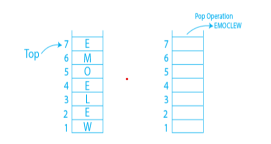
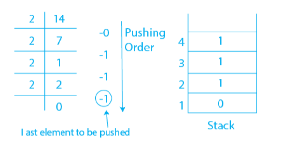

Aim:
Stack application using Array.
- Reverse the string
- Convert Decimal to Binary
Theory:
Reorder the data in such a way that the first and final elements are
switched, the second and second-last elements are switched, and so on for all
subsequent elements if we want to reverse a given collection of data.
There are different reversing applications:
- Reversing a string
- Converting Decimal to Binary
- Reverse a String
- Converting Decimal to Binary
A Stack can be used to reverse a string’s characters. This can be done by simply popping each character off of the stack one at a time after pushing them onto the stack one at a time. The initial character of the Stack is at the bottom of the Stack, the last character of the String is at the top, and due to the Stack’s last in first out property, after performing the pop operation in the Stack, the Stack returns the String in reverse order.
Example: If we were to reverse the string Welcome, we would get Emoclew.

A number can be transformed from decimal to binary, octal, or hexadecimal using a stack. Any decimal number can be converted to a binary number by continually dividing it by two and pushing the residue of each division onto the stack until the result is 0. The binary counterpart of the provided decimal number is then obtained by popping the entire stack.
Example: Converting 14 number Decimal to Binary:

In the example above, we get seven as a quotient and one as the reminder when we divide 14 by 2, and these two values are pushed onto the stack. When we divide seven by two once more, we get three as the quotient and one as the reminder, which is once more added to the Stack. The supplied number is lowered in this manner until it does not reach zero. The comparable binary number 1110 is what we receive after we totally pop off the stack.
Simulation:
Quiz:
Feedback: